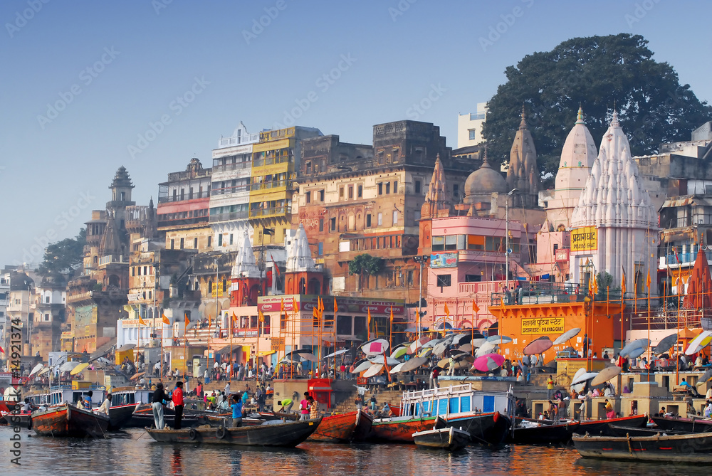
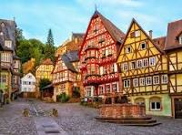

Discover Your Destination
India
About India
Located on the immediate left of the Dashashwamedh Ghat, it was built by Balaji Bajirao in 1778 and is a replica of the Prayag holy city in Allahabad
Top Attractions
- Attraction 1: Take a holy dip in the Triveni Sangam
- Attraction 2: Experience the rich history of the city at Prayagraj Fort
- Attraction 3: Marvel at the architectural delight that is Khusro Bagh
This ghat together with shrine of Prayagagesvara replicates the existence of Prayaga/Allahabad in Varanasi. Prayaga, called "Tirtharaja", lies at the confluence of the Ganga, the Yamuna and the invisible Sarasvati rivers. It is commonly believed that doing rituals and taking sacred bathtub right here provide precisely the equal non secular advantage as those at Prayaga
Plan Your Trip
You can visit the place on Summers and Spring Season
Germany
About Germany
Located on the immediate left of the Dashashwamedh Ghat, it was built by Balaji Bajirao in 1778 and is a replica of the Prayag holy city in Allahabad
Top Attractions
- Attraction 1: River cruises on the Rhine and Maine
- Attraction 2: Berlin Film Festival
- Attraction 3: German Food
This ghat together with shrine of Prayagagesvara replicates the existence of Prayaga/Allahabad in Varanasi. Prayaga, called "Tirtharaja", lies at the confluence of the Ganga, the Yamuna and the invisible Sarasvati rivers. It is commonly believed that doing rituals and taking sacred bathtub right here provide precisely the equal non secular advantage as those at Prayaga
Plan Your Trip
You can visit the place on Summers and Spring Season
France
About France
Located on the immediate left of the Dashashwamedh Ghat, it was built by Balaji Bajirao in 1778 and is a replica of the Prayag holy city in Allahabad
Top Attractions
- Attraction 1: The Landscapes are Stunning
- Attraction 2: Architecture from across the ages
- Attraction 3: The Beaches are Beautiful
This ghat together with shrine of Prayagagesvara replicates the existence of Prayaga/Allahabad in Varanasi. Prayaga, called "Tirtharaja", lies at the confluence of the Ganga, the Yamuna and the invisible Sarasvati rivers. It is commonly believed that doing rituals and taking sacred bathtub right here provide precisely the equal non secular advantage as those at Prayaga
Plan Your Trip
You can visit the place on Summers and Spring Season
Europe

About Europe
Located on the immediate left of the Dashashwamedh Ghat, it was built by Balaji Bajirao in 1778 and is a replica of the Prayag holy city in Allahabad
Top Attractions
- Attraction 1: Rich History
- Attraction 2:Majestic Castles
- Attraction 3: Train Rides
This ghat together with shrine of Prayagagesvara replicates the existence of Prayaga/Allahabad in Varanasi. Prayaga, called "Tirtharaja", lies at the confluence of the Ganga, the Yamuna and the invisible Sarasvati rivers. It is commonly believed that doing rituals and taking sacred bathtub right here provide precisely the equal non secular advantage as those at Prayaga
Plan Your Trip
You can visit the place on Summers and Spring Season